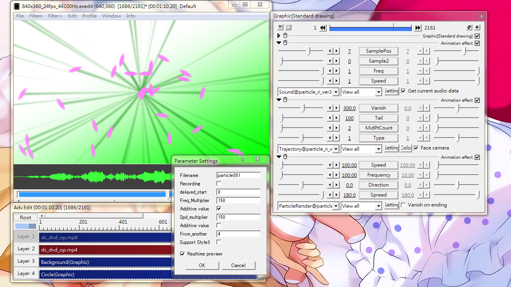

Fig21: Let particle speed and frequency to respond to sound.
Sound
Let particles' speed and output frequency to change according to audio volume at defined frequency range.
Sliders
SamplePos
Set the frequency range where volume data would be obtained.
1 for the lowest 10% frequency, 10 for the highest 10% frequency.
Sample2
Get another volume data from another frequency range besides SamplePos.
Set this to 0 to disable this feature.
Freq
0: Output frequency does not respond to volume.
1: Output frequency responds to volume.
Speed
0: Particle speed does not respond to volume.
1: Particle speed responds to volume.
Check box
Get current audio data: When checked, use the audio data as reported by Advanced Editing at current position. Only a single Sound@ can have this option enabled. Uncheck this to use external data file.
Setting dialog
Filename
The file where audio data should be saved to or retrieved from.
automatically saves into the particle_music folder.
Recording
Save the audio data to file where this object spans.
The data will be saved to the particle_music folder, which resides at the same level as particle_ri_ver3.anm
When checked, particles will not respond to audio volume.
You need to PLAY the project at least once in order to obtain the file.
delayed_start
Skip a portion of the recorded data from the beginning. Value in seconds.
Freq_Multiplier
A percentage value to adjust the magnitude of effect for volume data to have on the output frequency. Use 100 as default, 200 to double the effect, 50 to half the effect.
Additive value
Unchecked: base Frequency is multiplied with audio volume and multiplier.
Checked: base Frequency is added to volume data*multiplier
Spd_multiplier
Similar to Freq_Multiplier but acts on particle speed.
Additive value
When checked, adds volume data to base speed value.
From_another
Get volume data from yet another frequency range.
Value range: 0~10
Use 0 to disable this feature
Support Style3
When checked, affects speed only when using with Style3@